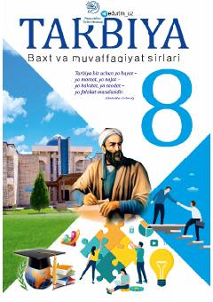

T88-sinf o‘quvchilari uchun mo‘ljallangan "Tarbiya" fanidan darslik.
Ushbu darslik umumiy o‘rta ta’lim maktablarining 8-sinf o‘quvchilari uchun mo‘ljallangan bo‘lib, o‘quvchilarda baxt va muvaffaqiyat sirlari, ezgu maqsadlar sari intilish, mardlik va shijoat kabi insoniy fazilatlarni shakllantirishga qaratilgan. Kitobda turli hayotiy vaziyatlar, ibratli hikoyatlar va mulohaza uchun savol-topshiriqlar berilgan.